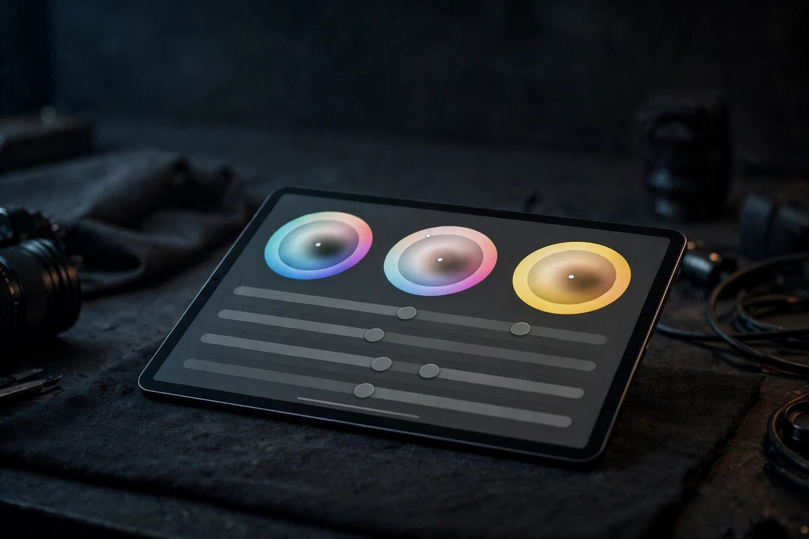

Color Grading Basics in Lightroom Mobile

What Color Grading Actually Means
Color grading is the step that gives a photo its mood. While basic adjustments such as exposure, contrast and white balance make a photo look correct, grading makes it look intentional. It is the difference between a snapshot that is simply well exposed and an image that feels warm and golden, cool and cinematic, or soft and faded. In Lightroom Mobile, grading is done mainly with the Color Grading panel, which replaced the older split toning controls, together with the HSL sliders that let you adjust individual colors.
Think of grading as adding a consistent color character to your photo: a warm grade might push amber into the highlights and teal into the shadows, while a film-inspired grade might mute the greens and lift the blacks. The goal is to support the feeling the photo already has, so a sunset portrait and a rainy street scene need very different grades.
The Three Color Wheels: Shadows, Midtones and Highlights
Open the Color Grading panel and you will see three color wheels, one each for shadows, midtones and highlights, plus a global wheel that affects the whole image. Each wheel works the same way: drag the center point toward a color to tint that tonal range, and drag it outward to increase the strength of the tint. A point near the center gives a subtle wash, while a point near the edge gives a strong color cast.
A classic starting point is to warm the highlights and cool the shadows slightly: drag the highlight wheel a short distance toward orange or yellow, and the shadow wheel toward blue or teal. The two colors sit opposite each other on the color wheel, which creates natural contrast. Keep both movements small at first — overdoing either one quickly makes skin look orange or shadows look muddy.
Use the midtone wheel to set the overall color personality of the image. A slight push toward green can suit forest and nature photos, while a push toward magenta can warm up portraits. Because midtones cover most of a photo, even a small move here changes the image a lot, so adjust it last and in small steps.
Blending and Balance: Controlling the Effect
Below each color wheel are two sliders: Blending and Balance. Blending controls how smoothly the tinted tonal ranges merge. A low value keeps shadows, midtones and highlights clearly separated, which can look punchy but sometimes harsh, while a higher value smooths the transitions and usually looks more natural, especially in portraits. Start around the middle and raise it if the color changes look blotchy.
Balance shifts the boundary between shadows and highlights. Moving it one way makes more of the image count as shadow, so the shadow tint covers a larger area; moving it the other way gives the highlight tint more reach. This is useful when a photo is mostly dark or mostly bright. In a night photo, for example, nudging the balance toward the highlights stops the shadow tint from swallowing the whole image. Small moves are enough, and you can always reset a single wheel by double-tapping it.
Tip: Grade on a calibrated-feeling screen in normal indoor light, and zoom out to see the whole photo. Tiny color shifts that look invisible when zoomed in can dominate the image at full size.
HSL Sliders: Fine-Tuning Individual Colors
The HSL panel works alongside the color wheels and gives you control over eight individual colors: red, orange, yellow, green, aqua, blue, purple and magenta. Each color has three sliders. Hue shifts the color itself, for example turning a yellow-green into a deeper green. Saturation controls how vivid that color is. Luminance controls how bright or dark it appears.
HSL is where you fix specific problems. If the grass in a landscape looks too yellow, select yellow and shift its hue toward green. If a blue sky looks dull, raise blue saturation and lower blue luminance to deepen it. For portraits, the orange slider is the most important one, because most skin tones live in the orange range. Lowering orange saturation slightly and raising orange luminance a touch can smooth skin without the plastic look that heavy retouching creates.
Change one slider at a time and watch only the part of the photo that color affects, so you can tell which move caused a problem.
Building a Consistent Look Across Photos
A consistent look is what makes a photo series or a social media feed feel professional. The easiest way to achieve it is to finish grading one photo completely, save those settings as a preset, and apply that preset to the other photos in the set as a starting point. Then adjust each photo individually, because no two shots have exactly the same light, and a preset that flatters a sunny portrait may make a cloudy landscape look grey.
Keep a simple written record of your favorite grades while you learn: which direction you pushed each wheel, the blending value, and the key HSL moves. After a few weeks you will notice patterns, such as always warming highlights slightly or desaturating greens. Those patterns are your personal style forming — refine them deliberately rather than copying someone else's preset blindly.
Frequently Asked Questions
Is color grading the same as applying a filter?
No. A filter applies a fixed look to any photo, while color grading lets you control exactly which colors go into the shadows, midtones and highlights. Grading takes longer but gives a result matched to each photo.
Why do my graded photos look different on other screens?
Every screen displays color slightly differently. Grade in normal indoor lighting, avoid maximum screen brightness, and check the finished photo on a second device before publishing it.
Should I grade before or after basic exposure adjustments?
Always fix exposure, contrast and white balance first. Grading on top of a badly exposed photo exaggerates its problems, while grading a well-balanced photo needs only small, clean moves.
Download Lightroom — Official App
Get the official Adobe Lightroom app free from your app store. Avoid modified APK files from other websites — they can contain malware and are not supported by Adobe.